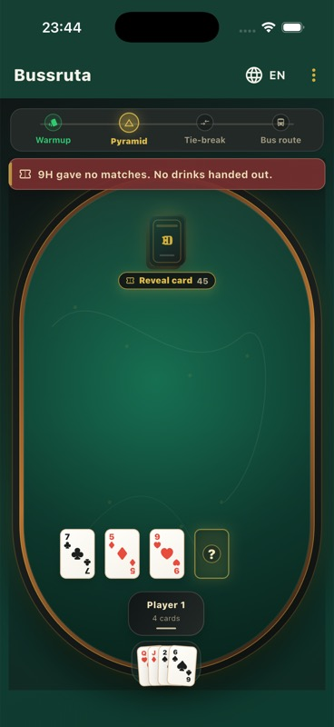
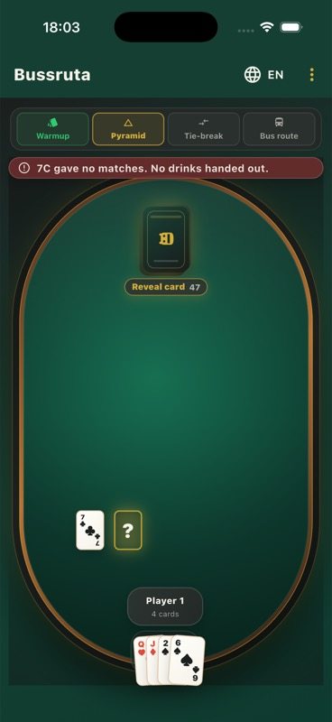
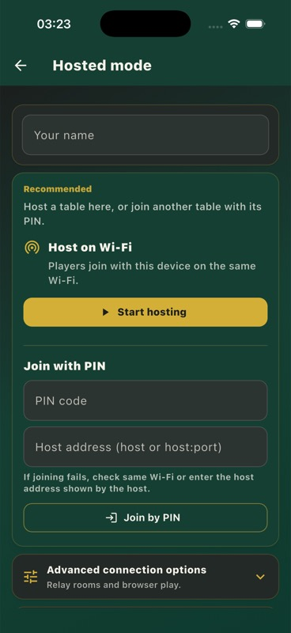

Bussruta
The social card game for one shared table.
Gather friends around one device, or host a table and let everyone join from their own screen. Short rounds, clear turns, and the final bus route when the table is ready for it.
Warmup
Pyramid
Tie-break
Bus route



How it works
Start quickly, keep the table focused, and let the app handle the turn structure.
Gather
Bring the group together and choose the mode that fits the room.
Connect
Use one device locally, or host a table and share the join details.
Play
Move through warmup, pyramid, tie-breaks, and the bus route.
Finish
Keep the pace up until the final challenge settles the round.
Built for the way people actually play
Bussruta keeps the familiar table-game rhythm, then adds app structure where it helps: setup, phase progress, hosted seats, reconnects, and clear prompts.
Local play
Everyone plays on one shared device. Good for quick rounds, small tables, and getting started without setup overhead.
Hosted play
One device hosts the table while players join from phones or laptops on the same trusted network.
App screens
Actual development screenshots from the private app repository, shown here as public product visuals.
Pyramid table
The main table view keeps the current phase, table cards, and player hand visible.
Play together without turning the game into admin
The app is meant to disappear into the table rhythm. It provides enough structure for rounds, phases, prompts, and hosted seats without making players manage the system.
- Local single-device flow
- Hosted Wi-Fi table flow
- PIN-based joining
- Phase progress for every round
- Reconnect-friendly hosted sessions
Development status
Bussruta is in active private development. This public site is for presentation, not source access.
Implemented
Core local game flow, hosted play direction, onboarding, language toggle, and app persistence are represented in the private app build.
In progress
Manual device QA, release polish, final identity assets, store-readiness work, and public distribution decisions.
Private source
The application source code, tests, implementation notes, and private development documents are not published here.
FAQ
Can I see the source code?
No. The source code is private. This repository only contains public-facing showcase material.
Is there a public build?
Not yet. Public build, demo, or store links can be added here when they are ready.
What platforms are planned?
The private app is built around Flutter, with mobile and web-oriented hosted play workflows under development.